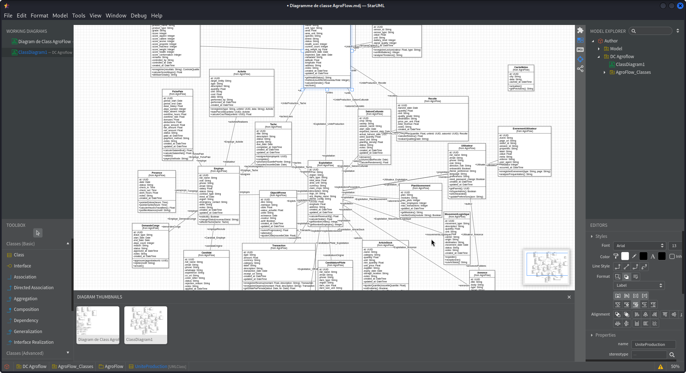

1. Contexte & Problématique Métier
Dans le secteur agro-pastoral, les exploitants et coopératives font face à des pertes considérables dues à une gestion manuelle sur registres papier, à l'absence de traçabilité des intrants et à une connectivité Internet très instable dans les zones de plantation. L'objectif était de développer un outil intuitif, accessible sur mobile et desktop, capable de fonctionner sans interruption même en zone blanche.
2. Architecture Technique & Choix Technologiques
Pour répondre aux contraintes du terrain, j'ai mis en place une architecture modulaire basée sur React en frontend avec synchronisation locale IndexedDB, couplée à un backend REST en Node.js et une base relationnelle PostgreSQL hautement optimisée. La modélisation a suivi la méthode MERISE (MCD/MLD) garantissant une 3ème forme normale stricte.
3. Galerie de Captures & Schémas d'Architecture
Cliquez sur n'importe quelle capture pour l'ouvrir en haute définition.

4. Résultats Obtenus & Impact Opérationnel
Le déploiement d'AgroFlow a permis de réduire le temps de consolidation des stocks de 75%, de supprimer les erreurs de saisie manuelle et de fournir aux exploitants une visibilité immédiate sur leurs marges par parcelle cultivée. Le système de synchronisation offline traite les écritures locales et les résout instantanément dès le rétablissement du réseau.
« L'architecture d'AgroFlow et sa prise en main intuitive ont transformé notre suivi des campagnes agricoles. Jordan a su anticiper toutes les contraintes de connectivité du terrain avec brio. »